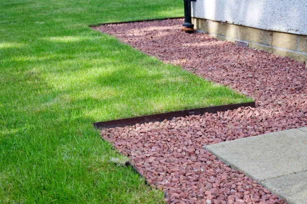
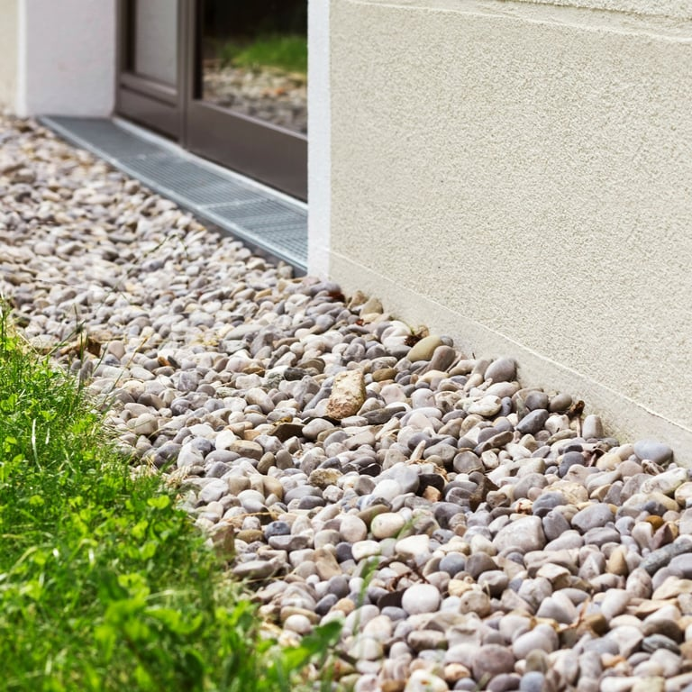
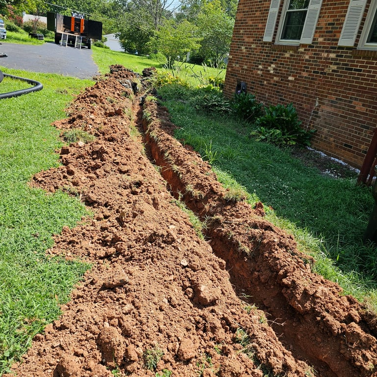
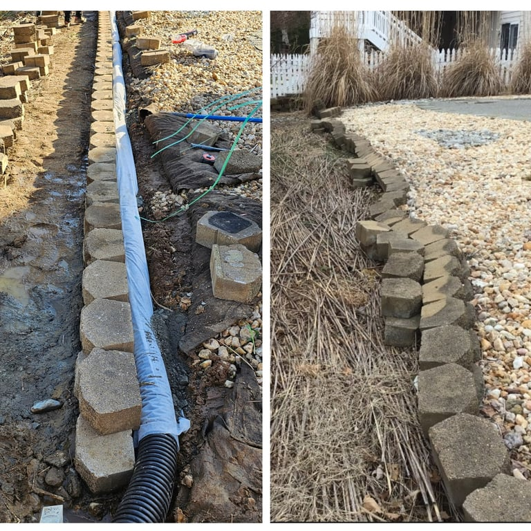
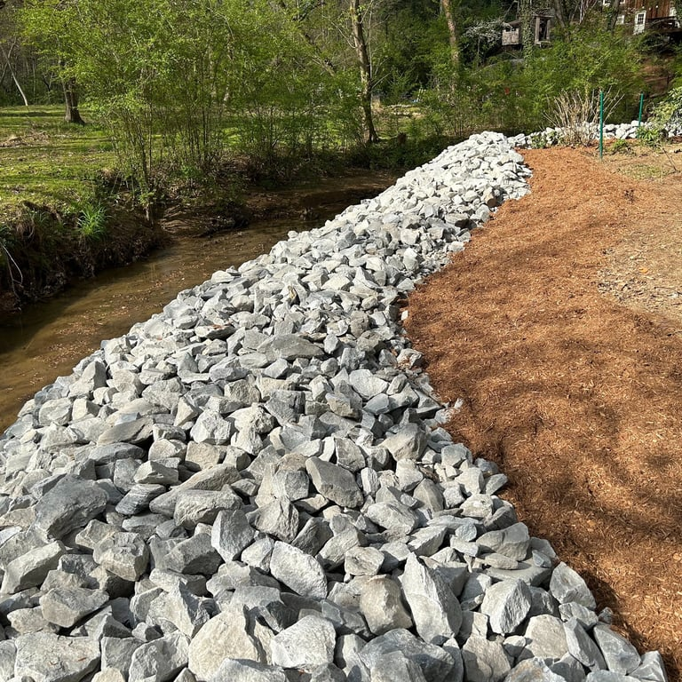
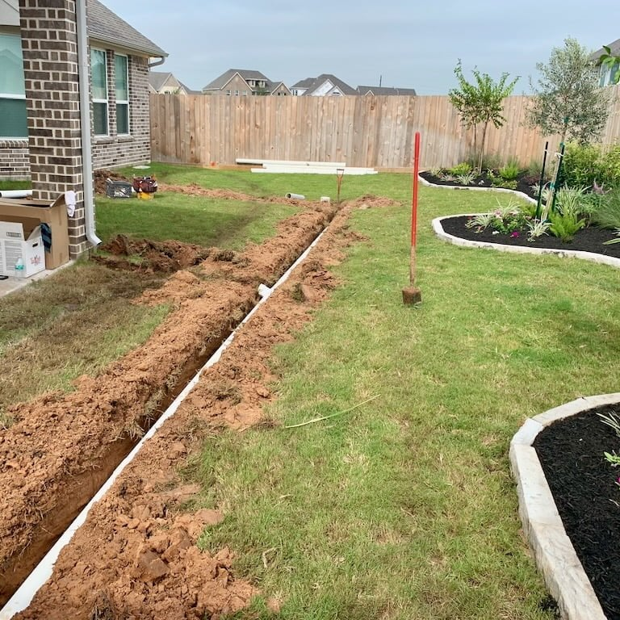
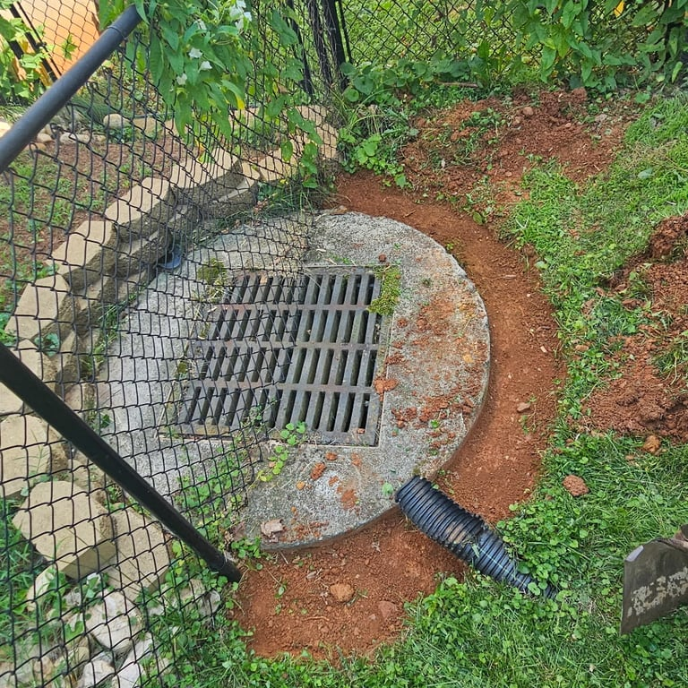

★★★★★
Licensed & fully insured
Your property is protected from the first inspection through final cleanup.
Expert French drain installation, yard drainage, and storm pipe solutions. Serving Chicago and surrounding areas with free estimates from a licensed, in-house crew—no subcontractors.
From soggy lawns to flooded foundations, our crew designs and installs solutions that move water safely away.
Perimeter foundation drainage installed outside the home to relieve hydrostatic pressure and stop basement seepage at the source.
Learn more →Interior drain tile installed beneath the basement slab to capture water before it enters the living space.
Learn more →Professional camera inspections that pinpoint clogs, breaks, and infiltration in your drainage and sewer lines.
Learn more →Engineered solutions for soggy lawns, standing water, and erosion across the entire property.
Learn more →Heavy-duty drainage systems for commercial buildings, parking lots, and multi-family properties.
Learn more →Underground storm pipe runs that carry roof, gutter, and yard water safely to a discharge point.
Learn more →






A local crew, clear estimates, and work that is built to last.
Your property is protected from the first inspection through final cleanup.
No subcontractors. The team that evaluates your problem is accountable for fixing it right.
More than 100 five-star reviews from homeowners who wanted their water problem solved for good.
Serving homeowners and businesses across Chicago and the surrounding suburbs.
Three straightforward steps from drainage problem to a dry, protected property.
Tell us about your drainage problem in two minutes.
We diagnose the issue and quote a fair, written price.
Our in-house crew installs your drainage system—guaranteed.
Drains protected professionally
Compacted soil, low spots, or improper grading can trap rainwater. Re-grading paired with a French drain or catch basin captures the water and redirects it to a safe discharge point.
Downspouts, negative slope, or saturated soil may push water against the home. Buried downspout extensions, exterior foundation drains, and proper grading move it safely away.
Hydrostatic pressure builds when groundwater has nowhere to go. Perimeter drain tile, sump systems, and properly piped discharge lines relieve that pressure before water enters.
Yes. Subsurface saturation suffocates roots and encourages fungus. A French drain network with strategically placed pop-up emitters can dry the root zone.
Hard surfaces shed nearly all rainfall. Channel drains tied into a buried drainage line collect the runoff and carry it safely away from the property.
No pressure. No subcontractors. Just an honest crew that fixes drainage problems for good. Get a callback within one business hour.